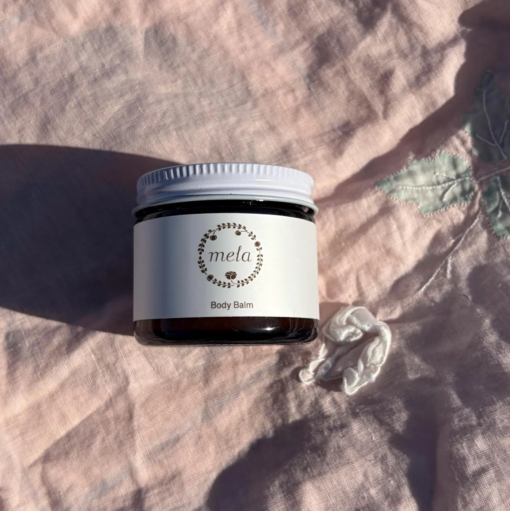
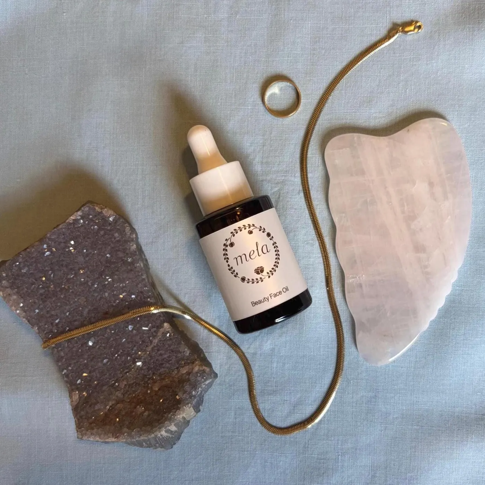
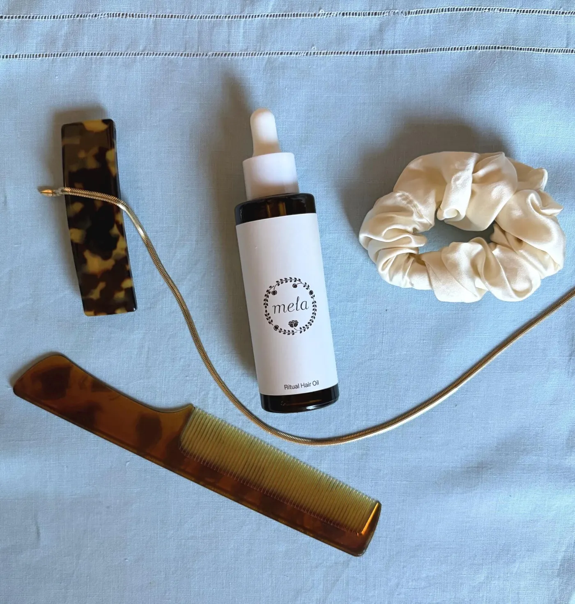
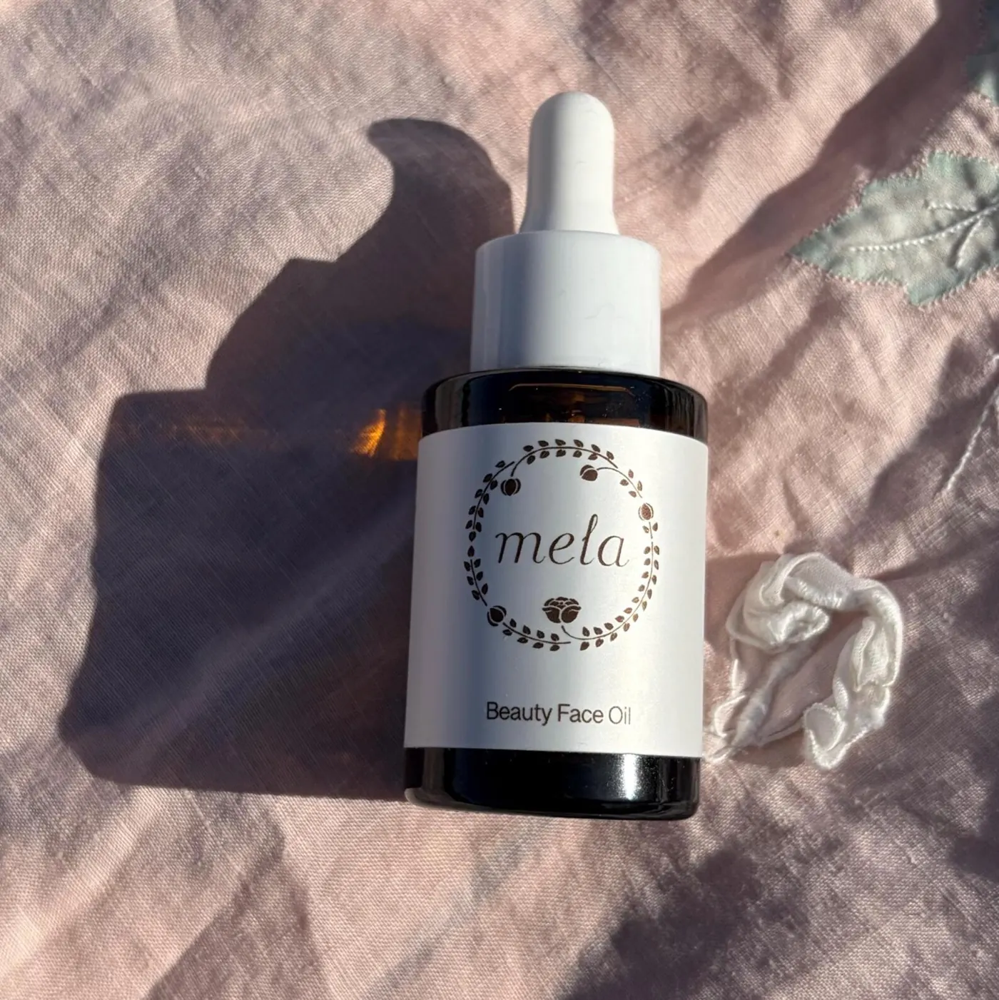
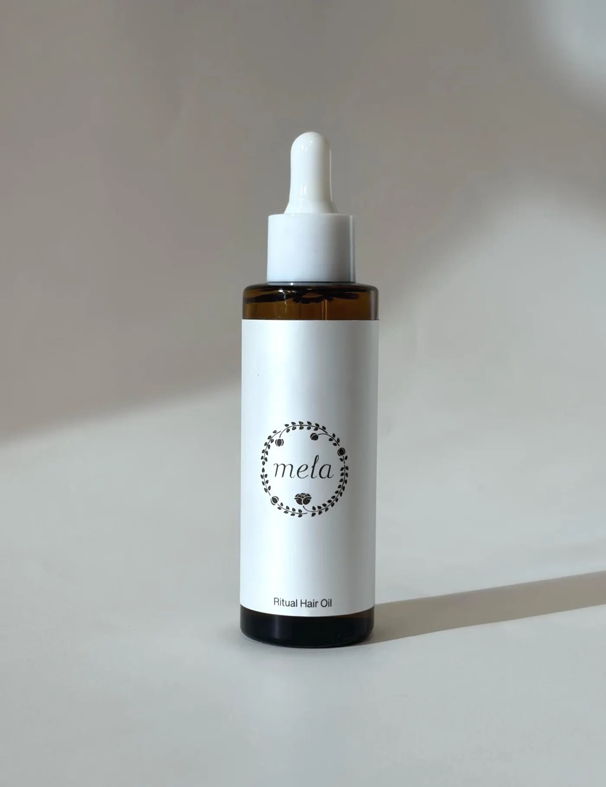
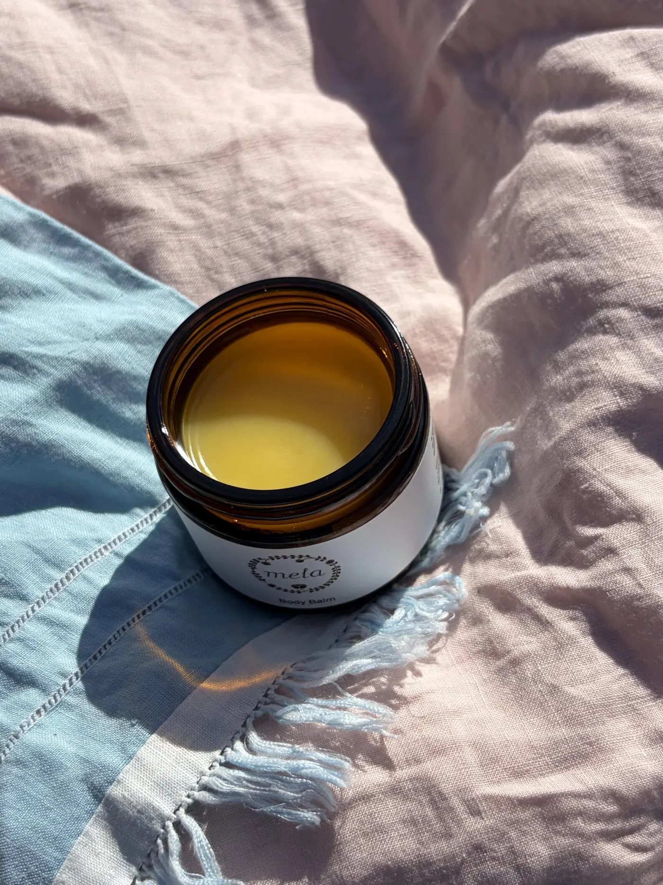
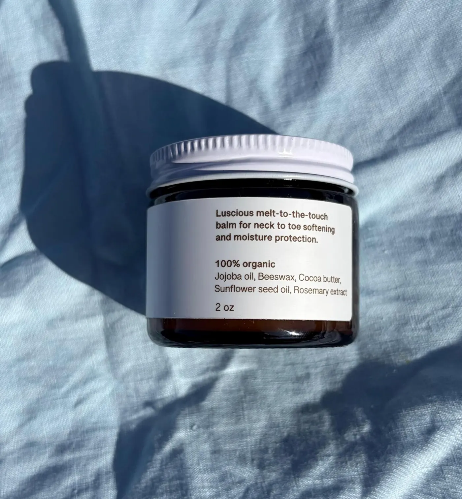
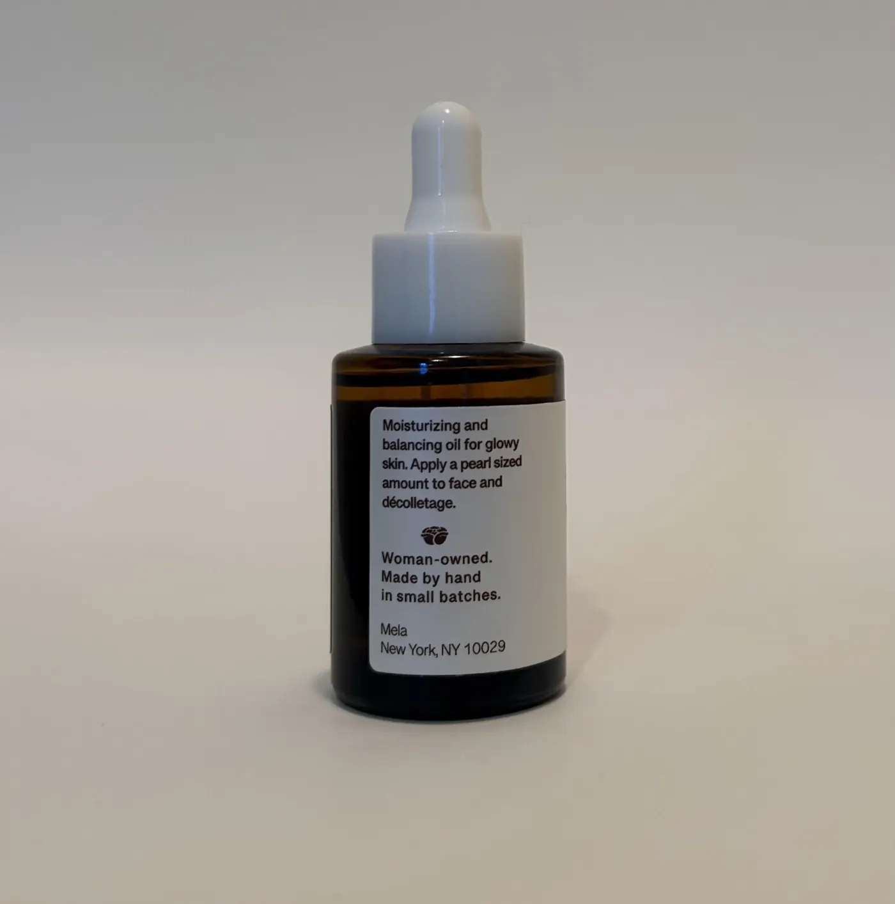
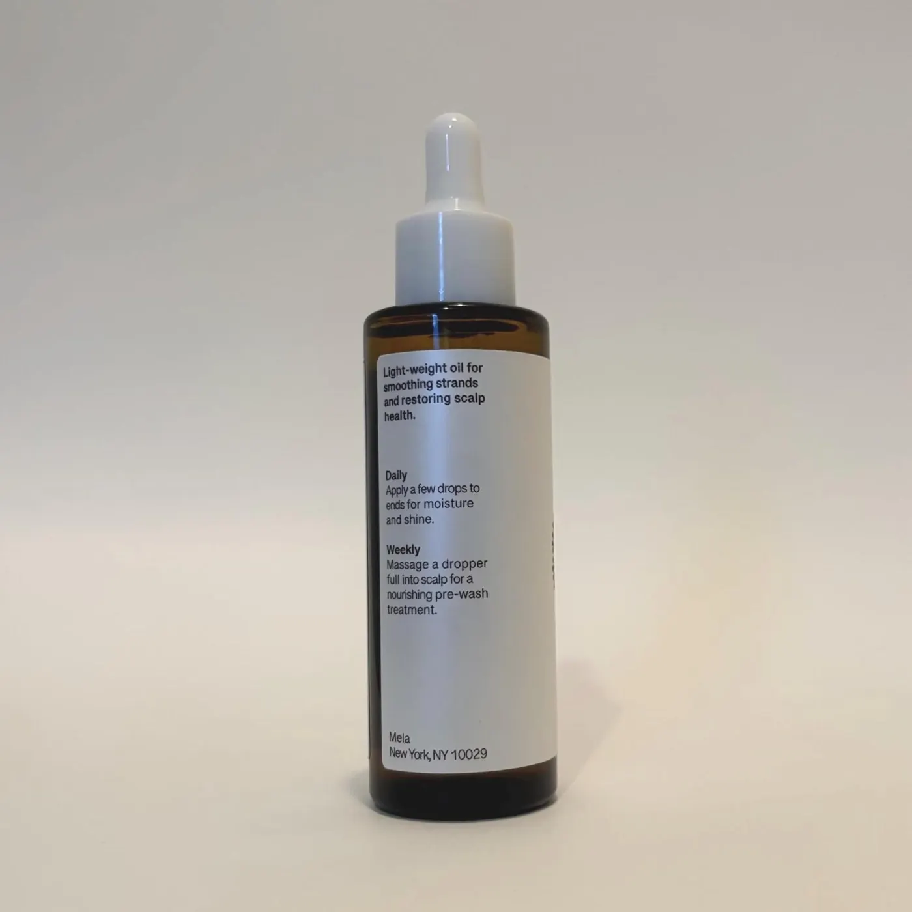

Body Balm
Melt-to-the-touch balm for neck to toe softening and moisture protection.


Organic balm and oils for skin and hair, from a woman-owned family business.
shop the collectionWe make three things: a balm for the body, an oil for the face, and an oil for hair and scalp.
Every ingredient is organic. The base oils are cold-pressed, and each batch is poured by hand into amber glass.

Body Balm
Beauty Face Oil
Ritual Hair Oil Body Balm
Body Balm
Three formulas, each made from a short list of organic ingredients.
Melt-to-the-touch balm for neck to toe softening and moisture protection.


Moisturizing and balancing oil for glowy skin.


Lightweight oil for smoothing strands and caring for the scalp.

The body balm is where mela began. The recipe has been handed down through generations of our family. It has five ingredients: jojoba oil, beeswax, cocoa butter, sunflower seed oil and rosemary extract.
It melts as soon as it touches skin and softens from neck to toe. There is no added fragrance, only a faint smell of cocoa and beeswax, so it is a good choice for sensitive skin.
shop the balm
Apply after a shower as an all-over moisturizer. Use it daily on hands and lips, or anywhere that feels dry.

After cleansing, warm a pearl-sized amount between your fingertips and press it into your face and décolletage.

Smooth a few drops through the ends for moisture and shine.
weeklyMassage a full dropper into the scalp before washing. Leave it on for an hour, or overnight.
Everything we use is organic. Here is what each ingredient does and where you will find it.
A liquid plant wax close in makeup to the skin's own sebum. It is the base of every formula.
balm · face oil · hair oilA light oil pressed from camellia seeds, used for centuries in Japanese hair and skin care.
face oil · hair oilRich in essential fatty acids, and a longtime favorite in face oils.
face oilPressed from the kernels of the Moroccan argan tree. It helps smooth and soften hair.
hair oilMade from Indian gooseberry, a traditional hair care ingredient in India.
hair oilThey give the balm its texture: firm in the jar, melting on skin. Beeswax also helps hold moisture in.
balmLavender and Egyptian geranium in the face oil. Rosemary, lavender and peppermint in the hair oil. The balm is unscented.
face oil · hair oilSunflower seed oil softens. Rosemary extract is an antioxidant that helps keep the oils fresh.
balm · face oil · hair oilProtect from heat and sunlight. Amber glass helps shield the oils from light.
100% organic ingredients
made by hand in New York
small batches
woman-owned
For special offers and exclusive product updates.